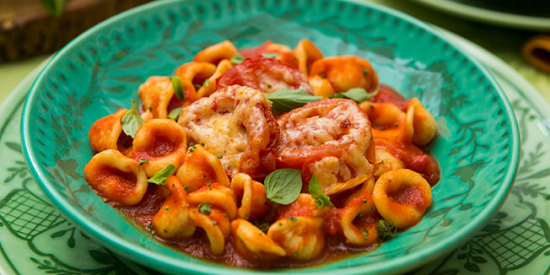
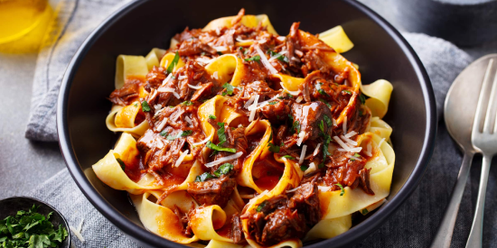
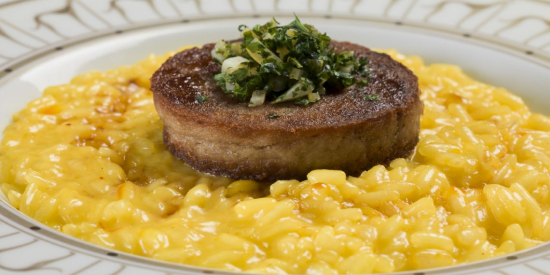
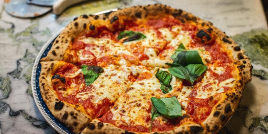

》 PRATOS PRINCIPAIS 《
É o momento mais aguardado, para onde se voltam todas as atenções.
Um prato principal irretocável tem sabor delicioso e apresentação perfeita.

Orecchiette ao Molho de Tomate:
A massa é moldada à mão como se faz na Puglia (uma região do sul que forma o “calcanhar” da Itália). Ela é servida com molho de tomate e tomates assados.
R$25,00

Pappardelle ao Ragú de Javali:
Este é um prato tradicional da Toscana que lhe permite apreciar a carne de javali mesmo que não seja um grande conhecedor de carnes exóticas.
R$40,00

Risotto com Ossobuco:
Um prato que representa bem a cozinha tradicional milanesa escolhendo o risoto de açafrão como acompanhamento clássico do ossobuco.
R$35,00

Pizza Napolitana:
Símbolo da gastronomia italiana, a pizza napolitana original é feita para consumo individual e caracterizada pela massa fina, pelo recheio leve e pelas bordas estufadas.
R$35,00
Clique aqui para voltar ao topo da página.